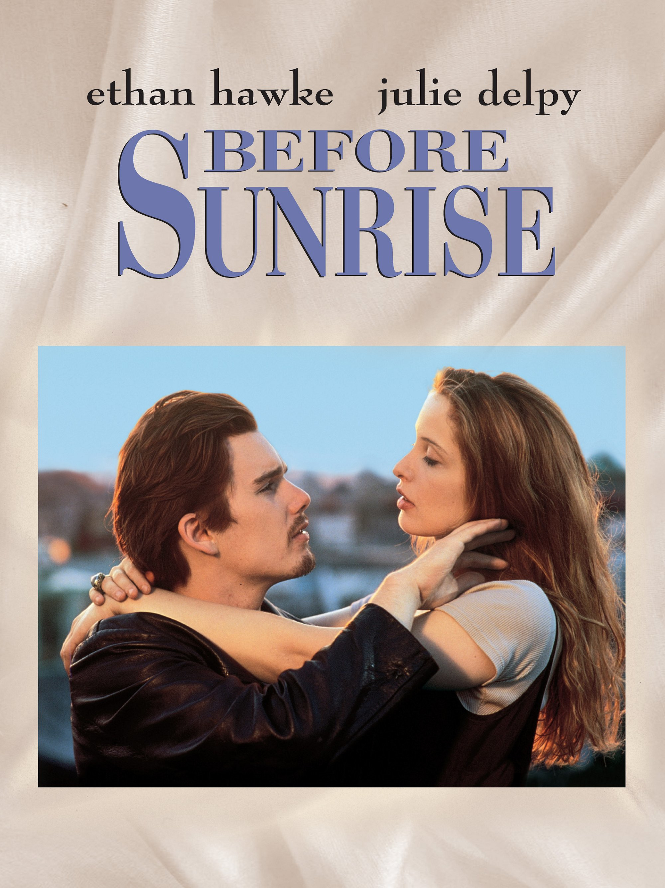

Before Sunrise is a 1995 romantic drama film directed by Richard Linklater and co-written by Linklater and Kim Krizan. The first installment in the Before trilogy, it follows Jesse (Ethan Hawke) and Céline (Julie Delpy) as they meet on a Eurail train and disembark in Vienna to spend the night together.
Inspired by personal experiences, Linklater collaborated with Krizan to develop the screenplay, who previously appeared in his films Slacker (1991) and Dazed and Confused (1993). Casting was extensive; it took nine months for Hawke and Delpy to be cast, with the pair also contributing uncredited rewrites. Principal photography took place entirely in Vienna.